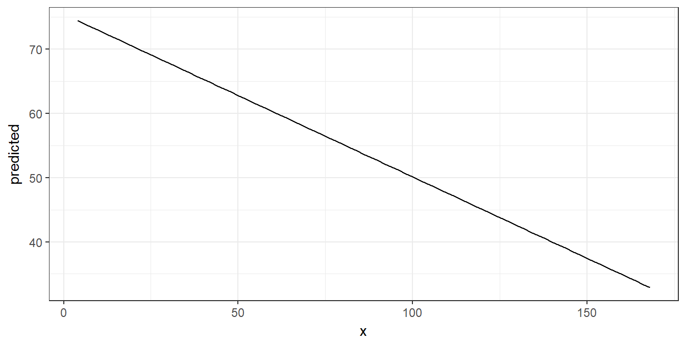
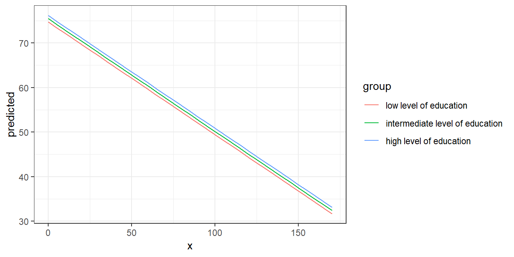
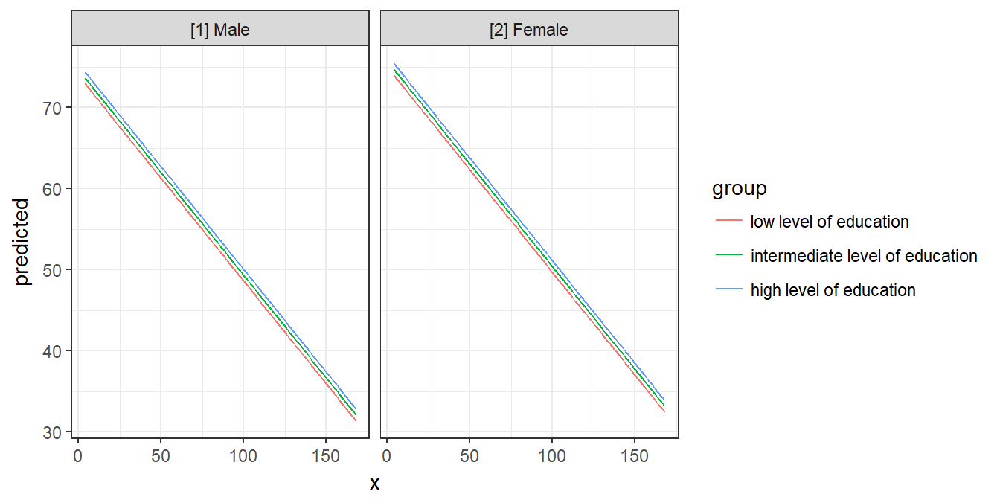
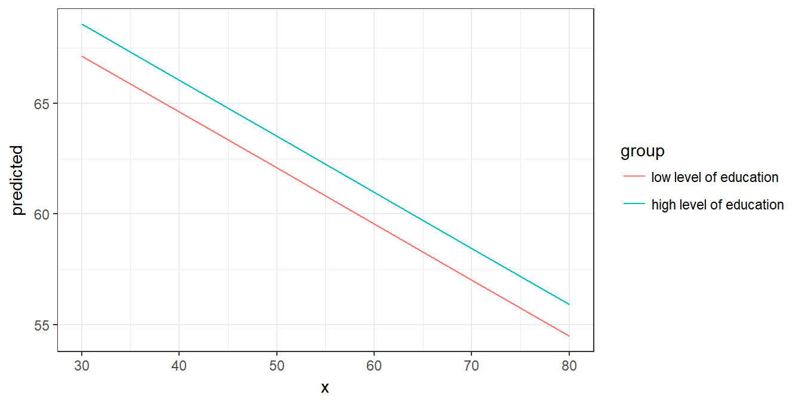
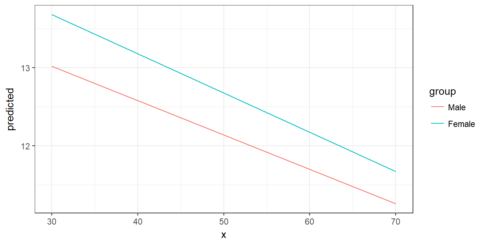
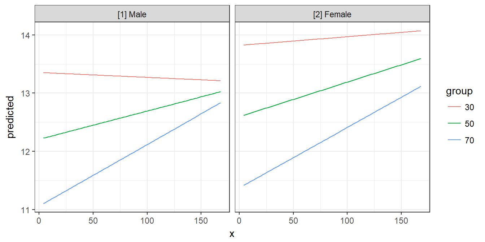
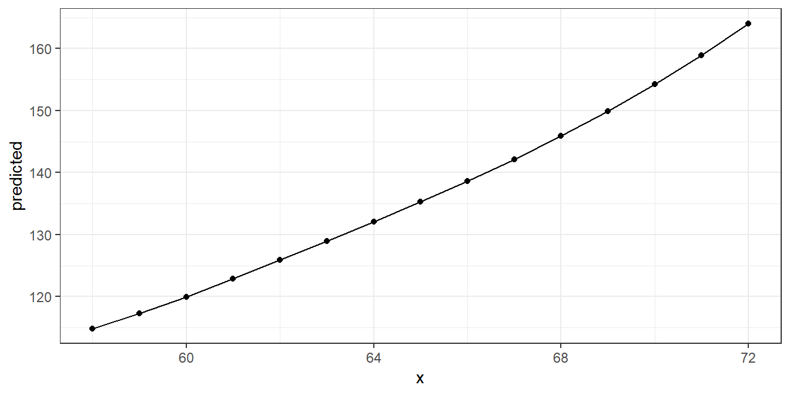

Marginal Effects of Regression Models
Daniel Lüdecke
2019-04-22
marginaleffects.RmdAim of the ggeffects-package
Results of regression models are typically presented as tables that are easy to understand. For more complex models that include interaction or quadratic / spline terms, tables with numbers are less helpful and difficult to interpret. In such cases, the visualization of marginal effects is far easier to understand and allows to intuitively get the idea of how predictors and outcome are associated, even for complex models.
The aim of this package is similar to the broom-package: transforming “untidy” input into a tidy data frame, especially for further use with ggplot. However, ggeffects does not return model-summaries; rather, this package computes marginal effects at the mean or average marginal effects from statistical models and returns the result as tidy data frame.
Since the focus lies on plotting the data (the marginal effects), at least one model term needs to be specified for which the effects are computed. It is also possible to compute marginal effects for model terms, grouped by the levels of another model’s predictor. The package also allows plotting marginal effects for two- or three-way-interactions, or for specific values of a model term only. Examples are shown below.
Short technical note
ggpredict(), ggeffect(), ggemmeans() and ggaverage() always return predicted values for the response of a model (or response distribution for Bayesian models).
Typically, ggpredict() returns confidence intervals based on the standard errors (+/- 1.96 * SE) as returned by the predict()-function. If predict() for a certain class does not return standard errors, these are calculated manually, by following steps: matrix-multiply X by the parameter vector B to get the predictions, then extract the variance-covariance matrix V of the parameters and compute XVX' to get the variance-covariance matrix of the predictions. The square-root of the diagonal of this matrix represent the standard errors of the predictions.
For mixed models, if type = "re" or type = "re.zi", the uncertainty in the random effects is accounted for when calculating the standard errors. Hence, in such cases, the confidence intervals may be considered as “prediction intervals”.
Consistent and tidy structure
The returned data frames always have the same, consistent structure and column names, so it’s easy to create ggplot-plots without the need to re-write the arguments to be mapped in each ggplot-call. x and predicted are the values for the x- and y-axis. conf.low and conf.high could be used as ymin and ymax aesthetics for ribbons to add confidence bands to the plot. group can be used as grouping-aesthetics, or for faceting.
The examples shown here mostly use ggplot2-code for the plots, however, there is also a plot()-method, which is described in the vignette Plotting Marginal Effects.
Marginal effects at the mean
ggpredict() computes predicted values for all possible levels and values from a model’s predictors. In the simplest case, a fitted model is passed as first argument, and the term in question as second argument. Use the raw name of the variable for the terms-argument only - you don’t need to write things like poly(term, 3) or I(term^2) for the terms-argument.
library(ggeffects)
data(efc)
fit <- lm(barthtot ~ c12hour + neg_c_7 + c161sex + c172code, data = efc)
ggpredict(fit, terms = "c12hour")
#>
#> # Predicted values of Total score BARTHEL INDEX
#> # x = average number of hours of care per week
#>
#> x predicted std.error conf.low conf.high
#> 0 75.444 1.116 73.257 77.630
#> 20 70.378 0.925 68.564 72.191
#> 45 64.045 0.843 62.393 65.697
#> 65 58.979 0.930 57.157 60.802
#> 85 53.913 1.122 51.713 56.113
#> 105 48.847 1.377 46.148 51.546
#> 125 43.781 1.665 40.517 47.045
#> 170 32.382 2.373 27.732 37.033
#>
#> Adjusted for:
#> * neg_c_7 = 11.84
#> * c161sex = 1.76
#> * c172code = 1.97As you can see, ggpredict() (and ggeffect() or ggemmeans()) has a nice print()-method, which takes care of printing not too many rows (but always an equally spaced range of values, including minimum and maximum value of the term in question) and giving some extra information. This is especially useful when predicted values are shown depending on the levels of other terms (see below).
The output shows the predicted values for the response at each value from the term c12hour. The data is already in shape for ggplot:
library(ggplot2)
theme_set(theme_bw())
mydf <- ggpredict(fit, terms = "c12hour")
ggplot(mydf, aes(x, predicted)) + geom_line()
Marginal effects at the mean for different groups
The terms-argument accepts up to three model terms, where the second and third term indicate grouping levels. This allows predictions for the term in question at different levels for other model terms:
ggpredict(fit, terms = c("c12hour", "c172code"))
#>
#> # Predicted values of Total score BARTHEL INDEX
#> # x = average number of hours of care per week
#>
#> # c172code = high level of education
#> x predicted std.error conf.low conf.high
#> 0 76.183 1.718 72.816 79.550
#> 30 68.584 1.616 65.417 71.751
#> 55 62.252 1.656 59.006 65.497
#> 85 54.653 1.843 51.040 58.265
#> 115 47.053 2.143 42.853 51.254
#> 170 33.122 2.863 27.511 38.733
#>
#> # c172code = intermediate level of education
#> x predicted std.error conf.low conf.high
#> 0 75.465 1.114 73.282 77.647
#> 30 67.866 0.868 66.165 69.566
#> 55 61.533 0.872 59.824 63.243
#> 85 53.934 1.126 51.727 56.141
#> 115 46.335 1.522 43.352 49.318
#> 170 32.404 2.377 27.745 37.062
#>
#> # c172code = low level of education
#> x predicted std.error conf.low conf.high
#> 0 74.746 1.776 71.266 78.227
#> 30 67.147 1.587 64.037 70.257
#> 55 60.815 1.550 57.777 63.853
#> 85 53.216 1.662 49.958 56.473
#> 115 45.617 1.914 41.865 49.368
#> 170 31.685 2.593 26.602 36.768
#>
#> Adjusted for:
#> * neg_c_7 = 11.84
#> * c161sex = 1.76Creating a ggplot is pretty straightforward: the colour-aesthetics is mapped with the group-column:
mydf <- ggpredict(fit, terms = c("c12hour", "c172code"))
ggplot(mydf, aes(x, predicted, colour = group)) + geom_line()
Finally, a second grouping structure can be defined, which will create another column named facet, which - as the name implies - might be used to create a facted plot:
mydf <- ggpredict(fit, terms = c("c12hour", "c172code", "c161sex"))
mydf
#>
#> # Predicted values of Total score BARTHEL INDEX
#> # x = average number of hours of care per week
#>
#> # c172code = high level of education
#> # c161sex = [1] Male
#> x predicted std.error conf.low conf.high
#> 0 75.391 2.220 71.040 79.741
#> 45 63.992 2.176 59.727 68.258
#> 85 53.860 2.364 49.226 58.494
#> 170 32.330 3.257 25.946 38.713
#>
#> # c172code = high level of education
#> # c161sex = [2] Female
#> x predicted std.error conf.low conf.high
#> 0 76.432 1.809 72.887 79.977
#> 45 65.034 1.712 61.679 68.388
#> 85 54.902 1.910 51.158 58.646
#> 170 33.371 2.895 27.697 39.045
#>
#> # c172code = intermediate level of education
#> # c161sex = [1] Male
#> x predicted std.error conf.low conf.high
#> 0 74.673 1.845 71.055 78.290
#> 45 63.274 1.730 59.883 66.665
#> 85 53.142 1.911 49.397 56.887
#> 170 31.611 2.872 25.982 37.241
#>
#> # c172code = intermediate level of education
#> # c161sex = [2] Female
#> x predicted std.error conf.low conf.high
#> 0 75.714 1.225 73.313 78.115
#> 45 64.315 0.968 62.418 66.213
#> 85 54.183 1.209 51.815 56.552
#> 170 32.653 2.403 27.943 37.362
#>
#> # c172code = low level of education
#> # c161sex = [1] Male
#> x predicted std.error conf.low conf.high
#> 0 73.954 2.347 69.354 78.554
#> 45 62.556 2.208 58.228 66.883
#> 85 52.424 2.310 47.896 56.951
#> 170 30.893 3.085 24.847 36.939
#>
#> # c172code = low level of education
#> # c161sex = [2] Female
#> x predicted std.error conf.low conf.high
#> 0 74.996 1.831 71.406 78.585
#> 45 63.597 1.603 60.456 66.738
#> 85 53.465 1.702 50.130 56.800
#> 170 31.934 2.606 26.827 37.042
#>
#> Adjusted for:
#> * neg_c_7 = 11.84
ggplot(mydf, aes(x, predicted, colour = group)) +
geom_line() +
facet_wrap(~facet)
Marginal effects for each model term
If the term argument is either missing or NULL, marginal effects for each model term are calculated. The result is returned as a list, which can be plotted manually (or using the plot() function).
mydf <- ggpredict(fit)
mydf
#> $c12hour
#>
#> # Predicted values of Total score BARTHEL INDEX
#> # x = average number of hours of care per week
#>
#> x predicted std.error conf.low conf.high
#> 0 75.444 1.116 73.257 77.630
#> 20 70.378 0.925 68.564 72.191
#> 45 64.045 0.843 62.393 65.697
#> 65 58.979 0.930 57.157 60.802
#> 85 53.913 1.122 51.713 56.113
#> 105 48.847 1.377 46.148 51.546
#> 125 43.781 1.665 40.517 47.045
#> 170 32.382 2.373 27.732 37.033
#>
#> Adjusted for:
#> * neg_c_7 = 11.84
#> * c161sex = 1.76
#> * c172code = 1.97
#>
#>
#> $neg_c_7
#>
#> # Predicted values of Total score BARTHEL INDEX
#> # x = Negative impact with 7 items
#>
#> x predicted std.error conf.low conf.high
#> 6 78.166 1.561 75.107 81.225
#> 8 73.571 1.206 71.207 75.935
#> 12 64.383 0.842 62.732 66.033
#> 14 59.788 0.972 57.883 61.693
#> 16 55.194 1.259 52.725 57.662
#> 20 46.005 2.021 42.043 49.966
#> 22 41.410 2.438 36.632 46.188
#> 28 27.627 3.735 20.306 34.947
#>
#> Adjusted for:
#> * c12hour = 42.20
#> * c161sex = 1.76
#> * c172code = 1.97
#>
#>
#> $c161sex
#>
#> # Predicted values of Total score BARTHEL INDEX
#> # x = carer's gender
#>
#> x predicted std.error conf.low conf.high
#> 1 63.962 1.728 60.575 67.350
#> 2 65.004 0.966 63.110 66.897
#>
#> Adjusted for:
#> * c12hour = 42.20
#> * neg_c_7 = 11.84
#> * c172code = 1.97
#>
#>
#> $c172code
#>
#> # Predicted values of Total score BARTHEL INDEX
#> # x = carer's level of education
#>
#> x predicted std.error conf.low conf.high
#> 1 64.057 1.554 61.012 67.103
#> 2 64.776 0.842 63.125 66.427
#> 3 65.494 1.621 62.317 68.672
#>
#> Adjusted for:
#> * c12hour = 42.20
#> * neg_c_7 = 11.84
#> * c161sex = 1.76
#>
#>
#> attr(,"class")
#> [1] "ggalleffects" "list"
#> attr(,"model.name")
#> [1] "fit"Average marginal effects
ggaverage() compute average marginal effects. While ggpredict() creates a data-grid (using expand.grid()) for all possible combinations of values (even if some combinations are not present in the data), ggaverage() computes predicted values based on the given data. This means that different predicted values for the outcome may occure at the same value or level for the term in question. The predicted values are then averaged for each value of the term in question and the linear trend is smoothed accross the averaged predicted values. This means that the line representing the marginal effects may cross or diverge, and are not necessarily in paralell to each other.
mydf <- ggaverage(fit, terms = c("c12hour", "c172code"))
ggplot(mydf, aes(x, predicted, colour = group)) + geom_line()
Since ggaverage() produces different predicted values for the same value or level of terms, linear-smoothing for gaussian models and loess-smoothing for non-gaussian models is used to produce “smooth” lines. This may lead to misleading plots, especially if polynomial or spline terms are included in the model. It’s preferred to use ggpredict() or ggeffect() resp. ggemmeans().
Two- and Three-Way-Interactions
To plot the marginal effects of interaction terms, simply specify these terms in the terms-argument.
library(sjmisc)
data(efc)
# make categorical
efc$c161sex <- to_factor(efc$c161sex)
# fit model with interaction
fit <- lm(neg_c_7 ~ c12hour + barthtot * c161sex, data = efc)
# select only levels 30, 50 and 70 from continuous variable Barthel-Index
mydf <- ggpredict(fit, terms = c("barthtot [30,50,70]", "c161sex"))
ggplot(mydf, aes(x, predicted, colour = group)) + geom_line()
Since the terms-argument accepts up to three model terms, you can also compute marginal effects for a 3-way-interaction. To plot the marginal effects of three interaction terms, just like before, specify all three terms in the terms-argument.
# fit model with 3-way-interaction
fit <- lm(neg_c_7 ~ c12hour * barthtot * c161sex, data = efc)
# select only levels 30, 50 and 70 from continuous variable Barthel-Index
mydf <- ggpredict(fit, terms = c("c12hour", "barthtot [30,50,70]", "c161sex"))
ggplot(mydf, aes(x, predicted, colour = group)) +
geom_line() +
facet_wrap(~facet)
Polynomial terms and splines
ggpredict() also works for models with polynomial terms or splines. Following code reproduces the plot from ?splines::bs:
library(splines)
data(women)
fm1 <- lm(weight ~ bs(height, df = 5), data = women)
dat <- ggpredict(fm1, "height")
ggplot(dat, aes(x, predicted)) +
geom_line() +
geom_point()
Survival models
ggpredict() also supports coxph-models from the survival-package and is able to either plot risk-scores (the default), probabilities of survival (type = "surv") or cumulative hazards (type = "cumhaz").
Since probabilities of survival and cumulative hazards are changing accross time, the time-variable is automatically used as x-axis in such cases, so the terms-argument only needs up to two variables for type = "surv" or type = "cumhaz".
data("lung", package = "survival")
# remove category 3 (outlier)
lung <- subset(lung, subset = ph.ecog %in% 0:2)
lung$sex <- factor(lung$sex, labels = c("male", "female"))
lung$ph.ecog <- factor(lung$ph.ecog, labels = c("good", "ok", "limited"))
m <- survival::coxph(survival::Surv(time, status) ~ sex + age + ph.ecog, data = lung)
# predicted risk-scores
ggpredict(m, c("sex", "ph.ecog"))
#>
#> # Predicted risk scores
#> # x = sex
#>
#> # ph.ecog = good
#> x predicted std.error conf.low conf.high
#> 1 0.829 0.148 0.621 1.107
#> 2 0.481 0.176 0.340 0.679
#>
#> # ph.ecog = limited
#> x predicted std.error conf.low conf.high
#> 1 2.044 0.157 1.503 2.781
#> 2 1.185 0.172 0.846 1.658
#>
#> # ph.ecog = ok
#> x predicted std.error conf.low conf.high
#> 1 1.249 0.107 1.013 1.540
#> 2 0.724 0.125 0.566 0.925
#>
#> Adjusted for:
#> * age = 62.42# probability of survival
ggpredict(m, c("sex", "ph.ecog"), type = "surv")
#>
#> # Probability of Survival
#> # x = time
#>
#> # sex = female
#> # ph.ecog = good
#> x predicted conf.low conf.high
#> 5 0.998 0.994 1.000
#> 181 0.860 0.794 0.932
#> 276 0.776 0.683 0.881
#> 1022 0.241 0.113 0.513
#>
#> # sex = female
#> # ph.ecog = limited
#> x predicted conf.low conf.high
#> 5 0.995 0.985 1.000
#> 181 0.690 0.577 0.825
#> 276 0.535 0.401 0.713
#> 1022 0.030 0.005 0.187
#>
#> # sex = female
#> # ph.ecog = ok
#> x predicted conf.low conf.high
#> 5 0.997 0.991 1.000
#> 181 0.797 0.724 0.877
#> 276 0.682 0.588 0.792
#> 1022 0.117 0.044 0.310
#>
#> # sex = male
#> # ph.ecog = good
#> x predicted conf.low conf.high
#> 5 0.997 0.989 1.000
#> 181 0.771 0.685 0.868
#> 276 0.645 0.536 0.776
#> 1022 0.086 0.028 0.264
#>
#> # sex = male
#> # ph.ecog = limited
#> x predicted conf.low conf.high
#> 5 0.992 0.974 1.000
#> 181 0.527 0.402 0.690
#> 276 0.339 0.220 0.523
#> 1022 0.002 0.000 0.041
#>
#> # sex = male
#> # ph.ecog = ok
#> x predicted conf.low conf.high
#> 5 0.995 0.984 1.000
#> 181 0.676 0.588 0.776
#> 276 0.517 0.417 0.640
#> 1022 0.025 0.006 0.108
#>
#> Adjusted for:
#> * age = 62.42Printing factor levels instead of numeric values
By default, to quickly create plot where data points can be connected with lines (i.e. to use a continuous x-axis-scale), the x-value is numeric, even if the first variable in terms (which is represented by the x-column in the returned data frame) is categorical. Since ggeffects supports labelled data (see also next section), plots are always correctly annotated, and a discrete scale is automatically used (see vignette Plotting Marginal Effects).
If you want to preserve the factor-class for x, use the argument x.as.factor = TRUE. This will also print the factor levels instead of numeric values in the console. An alternative would be to use the x.lab = TRUE-argument in the print()-method.
Here are some examples, first we fit a model where two variables are factors with character factor levels (we use sjmisc::to_label() to convert the labelled data into factors):
data(efc)
efc <- to_label(efc, c172code, c161sex)
m <- lm(barthtot ~ c12hour + neg_c_7 + c161sex + c172code, data = efc)
pr <- ggpredict(m, "c172code")By default, x is numeric.
print(pr)
#>
#> # Predicted values of Total score BARTHEL INDEX
#> # x = carer's level of education
#>
#> x predicted std.error conf.low conf.high
#> 1 62.127 2.370 57.481 66.773
#> 2 65.012 1.895 61.299 68.725
#> 3 63.344 2.402 58.636 68.052
#>
#> Adjusted for:
#> * c12hour = 42.20
#> * neg_c_7 = 11.84
#> * c161sex = MaleAs value labels and factor levels are saved as attributes in the returned data frame, we still can print these value labels:
print(pr, x.lab = TRUE)
#>
#> # Predicted values of Total score BARTHEL INDEX
#> # x = carer's level of education
#>
#> x predicted std.error conf.low conf.high
#> [1] low level of education 62.127 2.370 57.481 66.773
#> [2] intermediate level of education 65.012 1.895 61.299 68.725
#> [3] high level of education 63.344 2.402 58.636 68.052
#>
#> Adjusted for:
#> * c12hour = 42.20
#> * neg_c_7 = 11.84
#> * c161sex = MaleAgain, printing the results will cause factors as x to become numeric…
ggpredict(m, "c172code")
#>
#> # Predicted values of Total score BARTHEL INDEX
#> # x = carer's level of education
#>
#> x predicted std.error conf.low conf.high
#> 1 62.127 2.370 57.481 66.773
#> 2 65.012 1.895 61.299 68.725
#> 3 63.344 2.402 58.636 68.052
#>
#> Adjusted for:
#> * c12hour = 42.20
#> * neg_c_7 = 11.84
#> * c161sex = Male… unless you change this behaviour with x.as.factor = TRUE.
ggpredict(m, "c172code", x.as.factor = TRUE)
#>
#> # Predicted values of Total score BARTHEL INDEX
#> # x = carer's level of education
#>
#> x predicted std.error conf.low conf.high
#> low level of education 62.127 2.370 57.481 66.773
#> intermediate level of education 65.012 1.895 61.299 68.725
#> high level of education 63.344 2.402 58.636 68.052
#>
#> Adjusted for:
#> * c12hour = 42.20
#> * neg_c_7 = 11.84
#> * c161sex = MaleLabelling the data
ggeffects makes use of the sjlabelled-package and supports labelled data. If the data from the fitted models is labelled, the value and variable label attributes are usually copied to the model frame stored in the model object. ggeffects provides various getter-functions to access these labels, which are returned as character vector and can be used in ggplot’s lab()- or scale_*()-functions.
-
get_title()- a generic title for the plot, based on the model family, like “predicted values” or “predicted probabilities” -
get_x_title()- the variable label of the first model term interms. -
get_y_title()- the variable label of the response. -
get_legend_title()- the variable label of the second model term interms. -
get_x_labels()- value labels of the first model term interms. -
get_legend_labels()- value labels of the second model term interms.
The data frame returned by ggpredict() or ggaverage() must be used as argument to one of the above function calls.
get_x_title(mydf)
#> [1] "average number of hours of care per week"
get_y_title(mydf)
#> [1] "Negative impact with 7 items"
ggplot(mydf, aes(x, predicted, colour = group)) +
geom_line() +
facet_wrap(~facet) +
labs(
x = get_x_title(mydf),
y = get_y_title(mydf),
colour = get_legend_title(mydf)
)